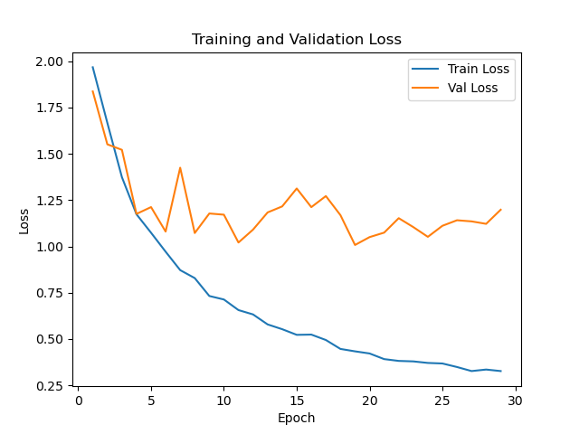
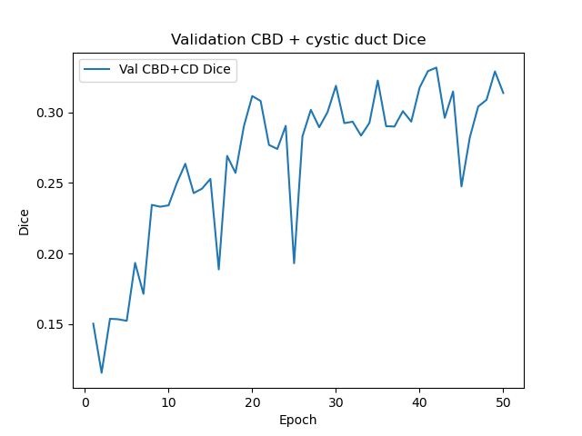

Semantic segmentation of Calot’s triangle landmarks
Data cleanup, dataset audit, DeepLabV3 experiments, and video overlay for common bile duct vs cystic duct identification — with the clinical goal of reducing bile duct injury.
1. Clinical motivation
Bile duct injury (BDI) during laparoscopic cholecystectomy has stayed near 0.4% for a decade. About 60% of major injuries are Stewart–Way class III events: the common bile duct (CBD) is mistaken for the cystic duct (CD) and transected. This project trains a segmentation model to highlight gallbladder-region anatomy on laparoscopic video (white light and ICG fluorescence) so that those two ducts can be distinguished in the field.
The objects that matter most are CBD vs cystic duct. Other landmarks (gallbladder, liver edge, instrument, cystic artery, Rouvière’s sulcus) are useful context but were treated as expendable when we later specialized the task.
2. Data preprocessing
The source archive AI project case pictures.zip is ~23 GB, almost entirely videos and office files. Only still images plus VIA JSON/TXT annotations were unpacked (~195 MB, 967 files) into data/raw_import/. Script: scripts/organize_dataset.py.
What was kept vs dropped
| Filter | Count |
|---|---|
| Valid image–annotation pairs in nested folders | 615 |
| Exact duplicate frames (SHA-1 of image bytes) | 207 |
| Annotation with no raw frame in the folder | 350 |
| Unreadable JSON | 2 |
| Unique frames kept | 408 |
| Patients | 58 |
The 350 “missing image” rows are mostly (a) VIA project dumps that list many filenames while the folder has one frame, and (b) Cases 8–16, which contain only overlay PNGs (4A labels.png, etc.). Overlays were never used as training images (name filter: annotation, labels, スライド).
Patient IDs and label cleanup
- Patient ID is the deepest CaseNN / CaseXNN path component. Case_08-22/Case22 is Case 22, not Case 8. Juntendo folders X12_… become CaseX12.
- VIA polygons are rasterized to integer masks. The typo
Gallbradderis mapped to Gallbladder (an earlier loader dropped that class). - On overlapping polygons the write order is CBD, then cystic duct, then cystic artery, then remaining classes.
Processed tree: data/processed/<CaseID>/<sample>/image.jpg + annotation.json. Manifest: data/processed/manifest.csv.
Compared with the previous local set (169 frames, 3 patients) this is about 2.4× frames and 19× patients.
3. Dataset exploration
Class presence (how many frames contain the class)
| Class | Frames | Share of pixels |
|---|---|---|
| Background | 408 | 53.3% |
| Liver edge | 407 | 24.0% |
| Gallbladder | 393 | 12.7% |
| Instrument | 348 | 3.8% |
| Common bile duct | 356 | 2.9% |
| Cystic duct | 390 | 2.4% |
| Cystic artery | 201 | 0.64% |
| Rouvière’s sulcus | 79 | 0.15% |
Pixel mass:
The two ducts of interest occupy about 5% of all labeled pixels. Inverse-frequency cross-entropy still spends most of its gradient on liver, gallbladder, and background.
Frames per patient are badly skewed
A handful of cases dominate: Case44 (56 frames), Case43 (45), Case41 (43), Case45 (25), Case50 (25). Many patients contribute a single frame. All later experiments therefore split by patient, not by frame, so Case43 cannot leak into both train and test.
What the polygons look like
Labels are coarse VIA polygons, not pixel-accurate tubes. CBD (green) and cystic duct (red) sit on a continuous ICG-green structure; the junction is a hard cut with no visual boundary in the photo. That is the clinical error mode, and it is also why Dice on these two classes is intrinsically hard.


Some test patients do not even have both ducts on the sampled frame (Case26: CBD only; CaseX10: CD only; CaseX13: neither on that frame). Two-column gallery: gt_previews/index.html.
4. Model and training setup
Architecture. DeepLabV3-ResNet50 from torchvision, ImageNet/COCO initialization, classifier head resized to the task’s class count. Input 512×512, ImageNet normalization.
Augmentation. Horizontal/vertical flip, 90° rotations, color jitter. Duct-focused runs also crop around CBD+CD with probability 0.7 so Calot’s triangle fills the window.
Optimization. Adam 1e-4, weight decay 1e-4, ReduceLROnPlateau, batch 16. Training on NVIDIA GH200 (DeltaAI, partition ghx4-interactive).
Held-out split (seed 42, patient-level, used for all comparable runs):
| Subset | Frames | Patients |
|---|---|---|
| Train | 260 | 39 |
| Val | 100 | 9 |
| Test | 48 | 9 |
Test patients: Case21, 26, 30, 33, 45, 48, X09, X10, X13. Val includes Case43 (45 frames), so val metrics can look unlike test.
Three task heads
| Task | Classes | Loss / early stop |
|---|---|---|
landmarks | 8 (bg + 7 landmarks) | Inverse-frequency CE; stop on val CE |
bile-ducts | 4 (bg, CBD, CD, other) | CE + CBD/CD Dice + CBD↔CD swap penalty; stop on duct Dice |
ducts-only | 3 (bg, CBD, CD) | Same duct loss; everything else is background |
The 4- and 3-class heads exist because we were willing to sacrifice gallbladder/liver/instrument accuracy to improve CBD vs CD.
5. Experiment results
All Dice/IoU below are per-image means, then averaged across images on the same 48-frame test set, except the first “enlarged” run which had no test holdout.
5.1 Enlarged 8-class (no test split)
Job 3063984. Train 357 / val 51 (11 patients). Best val loss at epoch 7; train loss kept falling while val rose. Val CBD Dice 0.34, CD Dice 0.17. Liver 0.82, instrument 0.65. Useful as a data-scale check, not as the reported number.
5.2 8-class with held-out test — best duct scores
Job for experiments/train_test. Inverse-frequency CE. Early stop on val loss (~epoch 19).
| Class | Test IoU | Test Dice | Val Dice |
|---|---|---|---|
| Liver edge | 0.77 | 0.86 | 0.76 |
| Instrument | 0.56 | 0.69 | 0.55 |
| Gallbladder | 0.43 | 0.56 | 0.63 |
| Common bile duct | 0.26 | 0.38 | 0.28 |
| Cystic duct | 0.22 | 0.33 | 0.31 |
| Cystic artery | 0.14 | 0.23 | 0.17 |
| Rouvière’s sulcus | 0.07 | 0.11 | 0.10 |
| Foreground mean | 0.35 | 0.45 | 0.40 |
Large, frequent classes are learned. The two ducts are in the right neighborhood but far from a clinical localizer. Predicted masks are thicker than the sparse expert polygons.
5.3 Trading other classes for the two ducts
Same split, same backbone. 4-class run (job 3064959) and 3-class run (job 3065146) used Dice + swap penalty and duct-centered crops; early-stop on mean CBD+CD Dice.
| Setup | CBD Dice | CD Dice | What happened |
|---|---|---|---|
| 8-class landmarks | 0.38 | 0.33 | Best of the three on CBD |
| 4-class (CBD / CD / other) | 0.20 | 0.30 | CBD recall 0.29; pixels dumped into other / background |
| 3-class (CBD / CD / background) | 0.20 | 0.33 | CD recovers; CBD still ~0.20; liver/GB become false-positive ducts |


6. Visualization
Held-out predictions (image | ground truth | prediction)


Video inference
OpenCV is not installed on the cluster Python, so video I/O uses the ffmpeg/6.1.1 module. Pipeline: extract JPEGs → DeepLabV3 per frame → blend mask at native 1080p → stitch MPEG-4.
- Source: chunked_video.mp4 (1920×1080, 59.94 fps, 3716 frames, 62 s)
- Output: outputs/chunked_video_segmented.mp4 (same timing, 8-class overlay + legend)
- Entry point: python scripts/infer.py --video chunked_video.mp4 --task landmarks or sbatch scripts/infer.sbatch
A 4-frame smoke test confirmed decode, overlay, and stitch before the full GPU job (3071006).
7. Conclusions
- The zip is now a single training tree of 408 unique frames / 58 patients, with consistent labels and no overlay leak into the pixels.
- An 8-class DeepLabV3 produces a usable coarse map of liver edge, gallbladder, and instruments (Dice 0.56–0.86 on held-out patients).
- It does not yet distinguish CBD from cystic duct well enough for BDI prevention. Best test Dice: CBD 0.38, CD 0.33.
- Giving up the other classes (4-class and 3-class) made CBD worse (~0.20) and did not lift CD above the 8-class number. The bottleneck is not “too many heads.”
- Qualitative review of the processed masks shows why: the two ducts are small adjacent polygons on a continuous fluorescent structure, with inconsistent presence across patients, and a few cases dominating the frame count.
8. Future work
- Tighten CBD vs CD annotations at the cystic–common junction, and require both ducts on Calot-triangle frames used for training. This is the highest-leverage step; loss tweaks will not invent a boundary that is not in the labels.
- More patients, fewer near-duplicate frames from Case41/43/44. Prefer diverse Calot views (pre-cut, CVS, ICG and white light) over 40 frames of one clip.
- Boundary-aware losses (Tversky with high false-negative cost on the ducts) on top of the 8-class model rather than collapsing classes.
- Two-stage localization: detect Calot’s triangle, then segment ducts at higher resolution instead of 512×512 full-frame.
- Real-time backbone (DeepLabV3-MobileNet or a lightweight decoder) if this is meant for the laparoscopic display; current overlay is offline (~10 min for 62 s of 1080p on GH200, dominated by JPEG I/O).
- Clinical review of video overlays with a surgeon: false CBD on liver/ICG glow is more dangerous than a missed Rouvière.